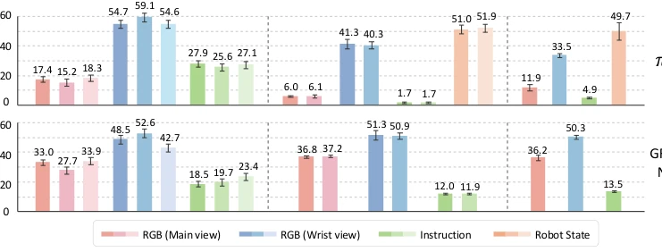
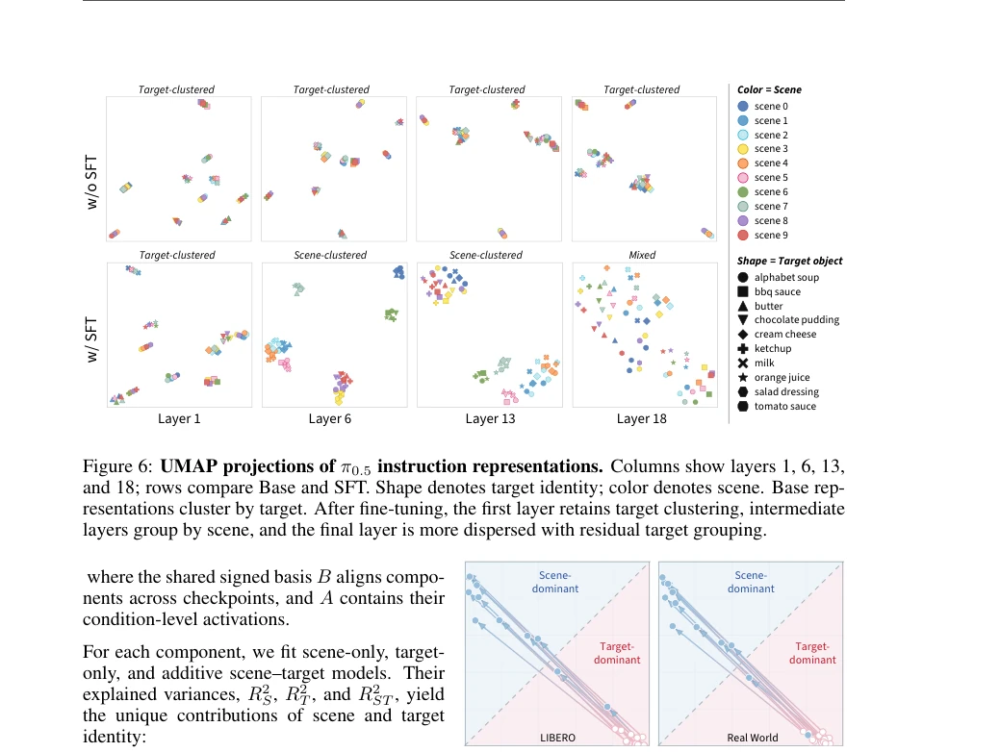
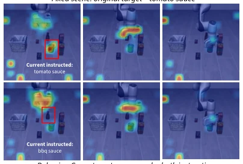
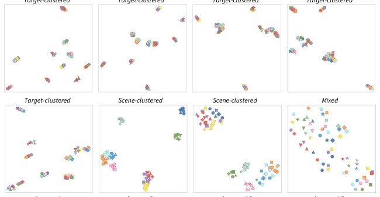

This paper pours cold water on the booming VLA robotics. Although the models can "successfully" complete tasks in both LIBERO and the real world, the authors find that they are actually "guessing" what to grab in the scene, rather than truly following instructions. Like asking a robot to grab ketchup, it might grab it directly because ketchup is already in the scene, even if you ask it to grab BBQ sauce. This reveals the "encoded but uncontrollable" grounding gap. The highlight lies in the solid diagnostic framework, peeling back layers from behavior to representation, proving that language information is encoded but does not dominate decision-making; the drawback lies in revealing only the problem without providing a fix, and the real-world experiment scale is small. However, this "sharp-tongued" analysis indeed wakes up researchers blindly pursuing success rates, pointing out that future progress should measure robots' response capability to conflicting intentions, rather than simple task completion rates.
研究动机Motivation
现有 VLA 和 WAM 模型评估多依赖任务成功率，但这无法区分模型是遵循指令还是利用场景先验。在 LIBERO 等数据集中，场景与任务常强相关，导致模型可能仅凭视觉就能推断行为，无需解析语言。LIBERO-CF 和 LangGap 虽指出指令跟随失败，但缺乏对内部表征与行为脱钩的机制分析。本文旨在解决这一模糊性：当场景允许多种动作时，语言是否真能决定行为？现有工作如 Fei et al. (2025) 和 Zhou et al. (2025b) 揭示了鲁棒性问题，但未深入探究为何编码的语言信息无法控制动作。本研究通过场景保持的指令干预，填补了从行为失败到内部表征的空白，确立了更严格的接地准则。
Existing VLA and WAM model evaluations mostly rely on task success rates, but this cannot distinguish whether the model is following instructions or leveraging scene priors. In datasets like LIBERO, scenes and tasks are often strongly correlated, leading to models potentially inferring behavior based solely on vision without parsing language. Although LIBERO-CF and LangGap point out instruction following failures, they lack mechanism analysis on the decoupling of internal representations and behavior. This paper aims to resolve this ambiguity: when a scene allows multiple actions, can language truly decide behavior? Existing work such as Fei et al. (2025) and Zhou et al. (2025b) reveals robustness issues but does not deeply explore why encoded language information cannot control actions. This study, through scene-preserved instruction intervention, fills the gap from behavior failure to internal representation, establishing stricter grounding criteria.

Figure 4: Modality contributions to action generation. Instruction tokens contribute relatively weakly to action generation in both π0.5 and GR00T N1.7, with visual or robot-state inputs account- ing for larger shares across simulation and real-world settings. 6.2 TARGET REPLACEMENT DOES NOT RELIABLY REDIRECT VISUAL ATTENTION
The overall process adopts a scene-preserved instruction intervention strategy, fixing the visual scene and modifying language instructions (target replacement, random nouns, random sentences), observing behavior changes. The core method is divided into three layers of diagnosis: First, detect the sensitivity of intermediate layer action predictions to instruction perturbations via Layerwise Action Lens, verifying whether language affects the generation process; Second, use linear probes at the instruction representation layer to decode target and scene identity, confirming whether information is lost; Finally, combine attention analysis, UMAP visualization, and Shared Non-negative Matrix Factorization to quantify the contribution of instruction Tokens to action generation, and analyze the shift of representation organization from target-dominant to scene-dominant after fine-tuning. This method not only evaluates behavior but also locates specific links of grounding failure through representation analysis, distinguishing language sensitivity, information accessibility, and behavioral compliance.

Figure 7: Shared semi-NMF components before and after fine-tuning. Arrows connect compo- nents before (open circles) and after fine-tuning (filled circles). Across both settings, components shift from target-dominated to scene-dominated organization, with greater scene-unique and lower target-unique variance.
Experiments cover LIBERO (Object/Spatial/Goal/Long), RoboTwin 2.0, and six real-world scenes. Baselines include π0.5, GR00T N1.7, FastWAM, LingBot-VA. Metrics include task success rate, Tend (tendency to attempt), probe accuracy, and attention weights. Results show that even when instructions require grabbing another visible object in the scene, models still grab the original target with 86%-98% probability, with similar real-world performance. Perturbation experiments indicate language sensitivity exists (random sentences significantly lower success rate), and target information can be linearly decoded, but instruction Token contribution to actions is weak (<30%), with attention still focusing on the original object. Representations after fine-tuning rely more on scene identity. This confirms the decoupling of encoding and control.

Figure 5: Target-token visual attention under target replacement. When the instructed target changes from tomato sauce to BBQ sauce, atten- tion remains focused on the original tomato sauce, which the policy grasps under both instructions. Red boxes mark the currently instructed target.

Figure 6: UMAP projections of π0.5 instruction representations. Columns show layers 1, 6, 13, and 18; rows compare Base and SFT. Shape denotes target identity; color denotes scene. Base rep- resentations cluster by target. After fine-tuning, the first layer retains target clustering, intermediate layers group by scene, and the final layer is more dispersed with residual target grouping.